Multiplicative Fibonacci SM
In this document we breakdown the complexities of the Polygon zkEVM's design in terms of a simplified example, a multiplicative Fibonacci state machine. The aim is to illustrate, in a generic sense, how the state machine approach has been implemented to realise the Polygon zkEVM.
Consider a proof/verification scheme, using an arbitrary Polynomial Commitment Scheme, where users have to prove knowledge of the N-th member of a multiplicative Fibonacci Series, for specific initial conditions.
The Multiplicative Fibonacci Series
The multiplicative Fibonacci Series (or simply mFibonacci Series), denoted by \(\mathbf{a_0, a_1, a_2, \dots , a_n}\), has the property that the product of every two consecutive members \(\mathbf{a_{i-1}}\) and \(\mathbf{a_i}\) gives the value of the next member \(\mathbf{a_{i+1}}\). That is, \(\mathbf{ a_{i+1} = a_{i-1}\cdot a_i }\). And, the initial values are specified as \(\mathbf{a_0} = 2\) and \(\mathbf{a_1} = 1\).
Here are the first ten members of the mFibonacci Series,
$$ \mathbf{ \ \ 2,\ \ 1,\ \ 2,\ \ 2,\ \ 4,\ \ 8,\ \ 32,\ \ 256,\ \ 8192,\ \ 2097152,\ \ \dots } $$ As a trivial example, the challenge may be: Prove knowledge of the initial values that produced \(\mathbf{a_{10} = 17179869184}\), the eleventh member of the mFibonacci Series, without revealing the initial values.
The task therefore, is to first build a state machine that would enable anyone to prove knowledge of the initial values \(\mathbf{a_0}\) and \(\mathbf{a_1}\) that yields a specific N-th member of the mFibonacci Series.
The mFibonacci State Machine
Consider a state machine with registries \(\mathbf{A} = [A_0, A_1, \dots , A_T ]\) and \(\mathbf{B} = [B_0, B_ 1, \dots , B_T]\), so that the i-th state is the pair \(\big( A_i , B_i \big)\). Such a state machine is an mFibonacci state machine if indeed the registry values conform to the format of the mFibonnacci Series. See Figure 4 below, for an mFibonacci state machine with the initial conditions, \(A_0 = 2\) and \(B_0 = 1\).
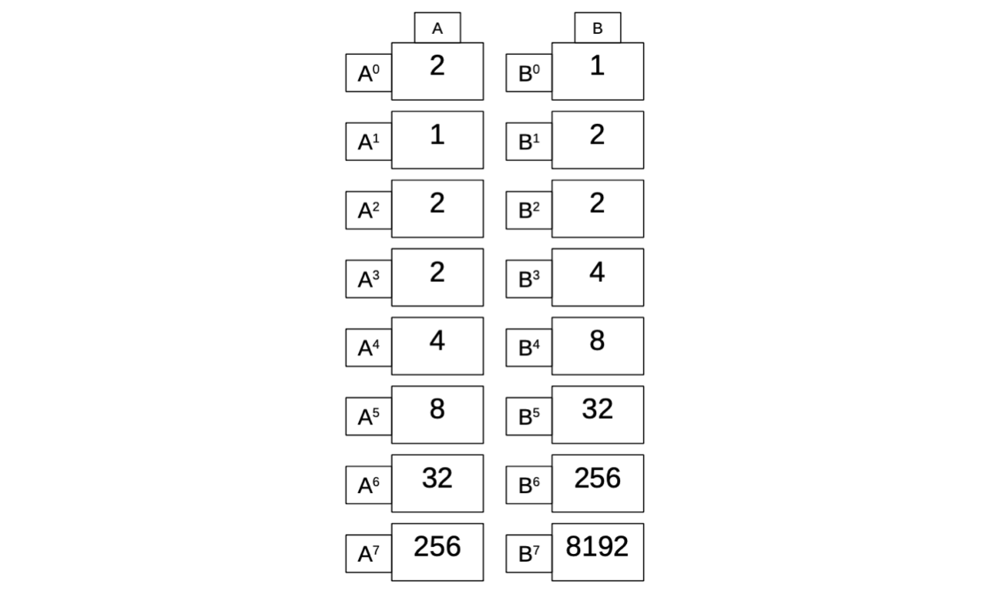
The state transitions from \(\mathtt{S} = \big( A_i , B_i \big)\) to \(\mathtt{S}' = \big( A_{i+1} , B_{i+1} \big)\) conform to the following constraints, $$ { A_{i+1} = B_i \quad\text{ }\text{ }\text{ } } \ { B_{i+1} = A_i \cdot B_i } $$ The aim here is to; express the evolution of the execution trace in terms of polynomials, build corresponding polynomial identities, and ultimately construct a ZK proof/verification scheme for our mFibonacci state machine.
Building The Polynomial Identities
The polynomials that represent the two registries are taken from the set of polynomials \(\mathbb{F}_p [X]\), where the coefficients are elements of a prime field \(\mathbb{F}_p\) and \(p = 2^{64} − 2^{32} + 1\). The polynomials are evaluated over the subgroup \({\mathcal{H}} = \{ \omega, \omega^2, \omega^3, \dots , \omega^7, \omega^8 = 1 = \omega^0 \} = \langle \omega \rangle \subseteq \mathbb{F}_p^*\) of order \(8\).
Define two polynomials \(P(X)\) and \(Q(X)\) such that
Since every \(X\) in \({\mathcal{H}}\) is of the form \(X = \omega^i\) for some \(i\), we have $$ \begin{aligned} P(X\cdot \omega) &= P(\omega^{i + 1}) = A_{i+1}, \ Q(X\cdot \omega) &= Q(\omega^{i+1}) = B_{i+1}. \end{aligned} $$ The previously stated constraints, imposed on the state transitions \(\mathtt{S} \to \mathtt{S}'\) of the mFibonacci state machine, translate into the following polynomial identities, $$ P(X\cdot \omega) = \bigg\lvert_{\mathcal{H}}\ Q(X),\qquad\text{ }\text{ }\text{ }\text{ } \ Q(X\cdot \omega) = \bigg\lvert_{\mathcal{H}}\ P(X) \cdot Q(X) $$ If these polynomial identities should accurately express the two registries, then every state transition of the mFibonacci SM must satisfy them.
Non-cyclicity Of The mFibonacci SM
Note that the definition of \({\mathcal{H}}\) does not restrict the values of \(i\) to be less than \(8\). Even if we set \(i = 27\), the element \(\omega^{27}\) is in \({\mathcal{H}}\) because \(\ \omega^{27} = w^8 \cdot \omega^8 \cdot \omega^8 \cdot \omega^3 = 1 \cdot 1 \cdot 1 \cdot \omega^3 = \omega^3\). However, the unrestricted value of \(i\), which implies there is no bound on the number of state changes (i.e., on the clock), presents problems with the above polynomial identities.
Let's test if the polynomial identities hold true for all permissible values of \(i\). Let \(X = \omega^7\) and refer to the registry values given in Figure 4.
- For the first identity we get,
- Similarly, for the second identity, we get,
$$ P(X)\cdot Q(X) = P(\omega^7)\cdot Q(\omega^7) = 256\cdot 8192 = 2097152 \not= 1 \quad $$ Clearly, the polynomial identities are not aligned with the registry values of the mFibonacci SM. The reason for this disparity is that, whereas \(H\) is cyclic, the polynomial identities are not.
Introducing Cyclicity Into The mFibonacci SM
In order to inject some cyclicity into the the mFibonacci SM, we add a third registry \(\mathbf{C} = [C_1, C_2, \dots , C_T]\) and set the registry values to \(\mathbf{C} = [0, 0, \dots , 0, 1]\). So the mFibonacci SM is now as depicted in Figure 5 below.
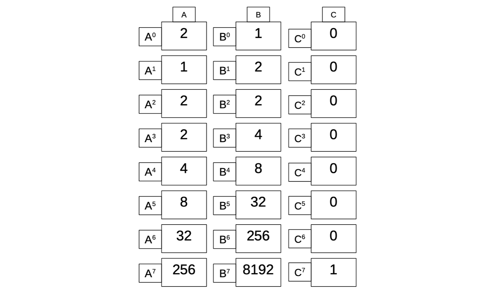
The corresponding polynomial \(R(x)\) is defined as follows, $$ R(\omega^i) = C[i] $$ That is, $$ \begin{aligned} R(\omega^i) = C[i] = 1, \text{ if } \ \ (i+1)\mod 8 = 0 \ \end{aligned} $$ $$ R(\omega^i) = C[i] = 0, \text{ otherwise} $$
The polynomial \(R(x)\) is incorporated into the previous polynomial identities as follows, $$ P(X \cdot \omega) = \bigg\lvert_{\mathcal{H}}\ \ Q(X) \cdot \big( 1 − R(X) \big) + R(X)\cdot A_0 \quad\quad\text{ }\text{ }\text{ } \ $$ $$ Q(X\cdot \omega) = \bigg\lvert_{\mathcal{H}}\ \ (1 − R(X)) \cdot P(X)\cdot Q(X) + R(X)\cdot B_0 $$
Note that, for all the states where the new registry \(C[i] = 0\), these new identities coincide with the previous ones (where only registries \(A\) and \(B\) were used).
These polynomial identities can be rewritten as, $$ \big( 1 − R(X) \big) \cdot \big[ P(X\cdot \omega) − Q(X) \big] + R(X)\cdot \big[ P(X \cdot \omega) − A_0 \big] = \bigg\lvert_{\mathcal{H}}\ 0\quad\text{ }\text{ }\text{ } $$ $$ (1 − R(X)) · [Q(Xω) − (P(X) · Q(X))] + R(X)\cdot [Q(Xω) − B_0] = \bigg\lvert_{\mathcal{H}}\ 0 $$
Let's check if these identities are cyclic. Again, let \(X = \omega^7\) and use the registry values given in Figure 5.
- For the first identity, we observe that,
- Similarly, for the second identity, we observe that,
These polynomial identities enforce correct state transitioning, and are therefore referred to as transition constraints. They apply to every pair of consecutive states. That is, every pair of consecutive rows in the execution trace of the SM.
Verifying Computations Of The mFibonacci SM
In addition to transition constraints, are boundary constraints. A boundary constraint is a constraint that enforces that a polynomial has a certain value at a particular root of unity.
Varied Initial Conditions
Note that instead of being restricted to the given initial conditions \(\big( A_0 , B_0 \big) = \big( 2 , 1 \big)\), the mFibonacci state machine together with its polynomial identities can be adjusted to any initial conditions \(\big( A_0 , B_0 \big)\).
For example, for \(A_0 = 23\) and \(B_0 = 46\), the constraints should be; $$ \big( 1 − R(X) \big) \cdot \big[ P(X\cdot \omega) − Q(X) \big] + R(X)\cdot \big[ P(X \cdot \omega) − 23 \big] = \bigg\lvert_{\mathcal{H}}\ 0\quad\text{ }\text{ }\text{ } $$ $$ (1 − R(X)) · [Q(Xω) − (P(X) · Q(X))] + R(X)\cdot [Q(Xω) − 46] = \bigg\lvert_{\mathcal{H}}\ 0 $$
In the context of our mFibonacci SM, the verifier can set the initial conditions $\big( A_0 , B_0 \big) $ to values of his or her own choice, and generate the state machine while keeping \(A_0\) and \(B_0\) secret. The prover's task is therefore, to prove knowledge of \(A_0\) and \(B_0\) that led to a given N-th term of the mFibonacci Series.
Boundary Constraints
Boundary constraints apply to particular registry values, and are used to enforce that the correct initial state was applied.
The idea here is to set up a specific boundary constraint, which the verifier can use to check that correct initial conditions were applied, when the prover was computing a particular N-th term of the mFibonacci Series. Yet, the verifier must not disclose any information about the secret values \(A_0\) and \(B_0\).
Therefore, the first thing to do, is removing terms in the identities bearing the initial values \(A_0\) and \(B_0\). This means modifying our polynomial identities to the ones below, $$ \big( 1 − R(X) \big) \cdot \big[ P(X\cdot \omega) − Q(X) \big] = \bigg\lvert_{\mathcal{H}}\ 0\qquad\text{ }\text{ }\text{ } $$ $$ (1 − R(X)) · [Q(X\cdot \omega) − (P(X) · Q(X))] = \bigg\lvert_{\mathcal{H}}\ 0 $$
Secondly, knowing that \(A_0\) and \(B_0\) yield the \(k\)-th term \(A_{k-1} = P(\omega^{k-1}) =: \mathcal{K}\), the verifier adds the boundary constraint, $$ P(\omega^{k-1}) = \mathcal{K} $$ In other words, the prover has to provide three polynomials \(P(X)\), \(Q(X)\), \(P(X\omega)\) and \(Q(X\omega)\) together with the correct \(k\)-th term. The verifier then tests if these polynomials conform to the above constraints. If all three constraints are satisfied, then the prover knows the correct initial values \(A_0\) and \(B_0\).
This logic is valid simply because the computations carried out by the state machine are deterministic by nature.
Example 1. (Proof Elements and Verification)
All computations are carried out in a field \(\mathbb{F}_p\) , where \(p = \mathtt{2^{64}-2^{32}+1}\), a Goldilocks-like prime number.
Suppose the verifier knows that an mFibonacci Series starting with initial values, \(A_0\) and \(B_0\), yields \(A_{\mathtt{1023}} = \mathtt{14\ 823\ 897\ 298\ 192\ 278\ 947}\) as the value of the \(\mathtt{1024}\)-th term. The verifier can challenge anyone to prove knowledge of the initial condition of the mFibonacci SM to provide three polynomials and the correct \(\mathtt{1024}\)-th term. That is, the verifier uses the following constraints to verify the prover's submissions; $$ \big( 1 − R(X) \big) \cdot \big[ P(X\cdot \omega) − Q(X) \big] = \bigg\lvert_H\ 0\qquad\quad\text{ }\text{ }\text{ } \ $$ $$ \big(1 − R(X)\big) · [Q(X\cdot \omega) − (P(X) · Q(X))] = \bigg\lvert_H\ 0\text{ } \ $$
Anyone who knows the three polynomials and the correct initial conditions, say \(A_0 = 234\) and \(B_0 = 135\), can simply run the mFibonacci SM code to compute \(A_{\mathtt{1023}} = P(\omega^{\mathtt{1023}})\). See Figure 6 below for the .js code.
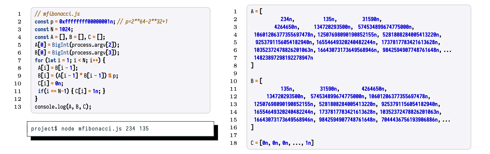
The Polynomial Commitment Scheme Setting
The framework for the proof/verification system of our mFibonacci SM is a Polynomial Commitment Scheme. The mechanism for proving correctness of the computations carried out by the mFibonacci SM (or, any state machine in the zkEVM setting), is best described in terms of an interactive zero-knowledge proof system. One therefore thinks of the proof/verification system as an interaction of two parties, traditionally called the Verifier and the Prover.
In practice though, the so-called Fiat-Shamir transformation is used to turn such interactive schemes into non-interactive ones.
Commitment Scheme Protocol (An Interactive Setting)
In the case of our mFibonacci state machine, the Prover needs to commit to the polynomials \(P(X)\), \(Q(X)\) \(P(X\omega)\) and \(Q(X\omega)\), and the Verifier will request the Prover to evaluate these polynomials at randomly selected points (i.e., field elements).
The general protocol, in an interactive setting, is as follows;
- The Prover commits to a polynomial or a number of polynomials, using a specified polynomial commitment scheme.
- The Verifier randomly selects one or more field elements, which she sends one at a time to the Prover as challenges. That is, the Verifier requests the Prover to provide evaluations (called openings) of the committed polynomials at these randomly selected field elements.
- This back and forth interaction can occur as many times as the number of openings the Verifier deems sufficient to guarantee soundness.
- The Verifier uses relevant polynomial constraints to test veracity of the Prover's openings.
If all the relevant constraints hold true, then the Verifier accepts that the Prover has knowledge of the correct polynomials \(P(X)\), \(Q(X)\), \(P(X\omega)\) and \(Q(X\omega)\).
Properties of Commitment Schemes
For all practical purposes, such the constructed proof/verification system needs to be secure. That is, it must have several cryptographic properties. The most crucial properties are; being hiding and binding, as well as soundness and completeness.
(a) Binding means users are able to commit to values but once committed, it should be impossible for users to change or repudiate their committed values. The committed values are called commitments.
(b) Hiding literally means users can commit to values without revealing the actual values, and it should be infeasible for anyone else to deduce the actual values.
(c) Openness means, given a challenge \(\alpha\) , the prover can generate a verifiable proof such that \(P(\alpha) = y\).
(c) Soundness has to do with whether it is infeasible for the adversarial prover to convince the verifier to accept invalid proofs (or commitments). A proof system is sound if the probability for the verifier to accept a false proof is less than a third, \(\Big( \text{probability} < \dfrac{1}{3} \Big)\). In other words, the soundness property of a proof system requires that any proof created from a false witness should not be convincing to the verifier.
(d) A proof system has completeness if every valid proof is convincing and acceptable to a verifier.
Proof systems based on testing polynomial identities take advantage of a basic property of polynomials expressed by the Schwartz-Zippel Lemma.
\(\text{Let } {Q(X_1, . . . , X_n)} \text{ be a nonzero polynomial of } {n} \text{ variables with degree } {d}, \text{ and } {S} \text{ be a finite but}\) \(\text{sufficiently large subset of the field } {\mathbb{F}}. \text{ If we assign } { X_1, . . . , X_n } \text{ values from } {S} \text{ independently and }\) \(\text{uniformly at random, then } {Pr[Q(X_1, . . . , X_n) = 0] ≤ \dfrac{d}{|S|}}.\)
Here's what the Schwartz-Zippel Lemma means in the proof/verification system of our mFibonacci state machine:
If the verifier selects the challenges \(\{ \alpha_1, \alpha_2 . . . , \alpha_l \}\) randomly and uniformly, then the probability of the prover finding a false polynomial \({Q'}\) of degree \(d\), such that \({Q'(\alpha_j) = 0 = Q(\alpha_j)}\) for all \(j \in \{ 1, 2, \dots , l \}\) , is at most \({\dfrac{d}{|S|}}\), which is very small.
This speaks of the soundness of our polynomial commitment scheme.
Example 2. (Proving the mFibonacci SM via a PCS)
Suppose the prover has to prove knowledge of the initial values of the mFibonacci Series that yields the \(1024\)-th term, \(A_{1023} = \mathtt{14\ 823\ 897\ 298\ 192\ 278\ 947}\). Suppose a certain polynomial commitment scheme (PCS) is used to facilitate proving and verification.
In a typical commitment scheme, the following protocol is followed;
(a) The prover commits to the polynomials \(P(X)\) and \(Q(X)\).
(b) The verifier selects a random point \(\alpha\), sends it to the prover, with a request for relevant openings.
(c) The prover then provides the openings; \(P(\alpha)\), \(P(\omega \alpha)\), \(Q(\alpha)\) and \(Q(\omega \alpha)\).
(d) The verifier can check correctness of the openings, by using transition constraints, $$ \big( 1 − R(X) \big) \cdot \big[ P(X\cdot \omega) − Q(X) \big] = \bigg\lvert_{\mathcal{H}}\ 0\qquad\quad\text{ }\text{ }\text{ }\text{ } $$
(e) In order to enable the verifier to check the boundary constraint, $$ P(\omega^{\mathtt{1023}}) = \mathtt{14\ 823\ 897\ 298\ 192\ 278\ 947}\qquad\qquad $$ the prover must send a witness \(\large{\mathtt{w}}\) as proof that he or she knows the correct value of the \(1024\)-th term, without disclosing the actual value \(A_{1023} = \mathtt{14\ 823\ 897\ 298\ 192\ 278\ 947}\).
(f) The verifier then uses a formula, which is specific to the commitment scheme in use and it takes the witness as an input, to check whether the prover has computed the correct \(A_{1023}\).
Note that the prover does not provide any values concerning the constant polynomial \(R(X)\), because this is known to both the prover and the verifier.
Any PCS such as KZG or FRI-based can be used to efficiently prove correctness of computations of our mFibonacci state machine.
From \({\mathcal{H}}\)-ranged to \({\mathbb{F}_p}\)-ranged Identities
Let's look carefully at the constraints of the mFibonacci state machine; $$ \big( 1 − R(X) \big) \cdot \big[ P(X\cdot \omega) − Q(X) \big] = \bigg\lvert_{\mathcal{H}}\ 0\qquad\quad\text{ }\text{ }\text{ }\text{ } $$ $$ \big(1 − R(X)\big) · [Q(X\cdot \omega) − (P(X) · Q(X))] = \bigg\lvert_{\mathcal{H}}\ 0\text{ }\text{ } $$
where \(\mathtt{T}+1\) is the number of rows in the execution trace and \(\mathcal{K}\) is an evaluation of \(P(X)\) at \(\omega^{\mathtt{T}}\), corresponding to the value of the registry \(\mathtt{A}\) in the \((\mathtt{T}+1)\)-st state, when specific initial values \(\mathtt{A}_0\) and \(\mathtt{B}_0\) are used in the state machine.
The problem with the transition constraints, as presented above, is that they hold true only for \(X \in \mathcal{H}\), and not necessarily for \(X \in \mathbb{F}_p\). Note that the left-hand sides of the polynomial identities are but polynomials, which can be labelled \(p_1(X)\), \(p_2(X)\) and \(p_3(X)\). That is, $$ p_1(X) =\big( 1 − R(X) \big) \cdot \big[ P(X\cdot \omega) − Q(X) \big] = \bigg\lvert_{\mathcal{H}}\ 0\qquad\quad\text{ }\text{ }\text{ }\text{ } \ $$
Define the so-called vanishing polynomial on \(\mathcal{H}\), denoted by \(\mathtt{Z}_{\mathcal{H}}(X)\), as the monomial of maximal degree such that \(\mathtt{Z}_{\mathcal{H}}(X) = 0\) for all \(X \in \mathcal{H}\). Therefore, $$ \mathtt{Z}_{\mathcal{H}}(X) = (X-1)\cdot(X-\omega)\cdot(X-\omega^2)\cdots(X-\omega^{n-1}) = X^{n} - 1 $$ Since \(p_i(X) = 0\) for all \(X \in \mathcal{H} = \{ \omega, \omega^2, \omega^3, \dots , \omega^n = 1 \}\), then $$ p_i(X)\ =\ \big((X-1)\cdot(X-\omega)\cdot(X-\omega^2)\cdots(X-\omega^{n-1})\big)\cdot q_i(X)\ =\ \big( X^{n} - 1 \big) \cdot q_i(X) $$ for some quotient polynomial \(q_i(X)\), for each \(i \in \{ 1, 2, 3 \}\).
The polynomial identities of our mFibonacci state machine can therefore be rewritten as
The representatives \(R(X)\) and \(Z_{\mathcal{H}}(X)\) in the PCS, can be preprocessed and be made public (i.e., known to both the Prover and the Verifier). The Verifier can check specific openings of these polynomials, \(R(X)\) and \(Z_{\mathcal{H}}(X)\).
Proof/Verification via PIL-STARK
The zkEVM's basic proof system for proving correctness of all state machine computations is a STARK. The fundamental configuration is: the zkEVM utilises STARK proofs for proving correctness of computations, due to their speed; but in order to attain succinct verification, these STARK proofs are in turn proved with a single SNARK. So, the zkProver employs STARK proofs internally, while the publicised validity proofs are SNARKs.
What is a STARK?
A STARK is a Scalable Transparent ARgument of Knowledge based on the Interactive Oracle Proof (IOP) model. Although a STARK is not adequately succinct, as a proof system, it is generally categorised as a special SNARK (which is short for Succinct Non-interactive ARgument of Knowledge).
Succinctness here, refers to producing short proofs that are independent of the size of the witness, and thus enabling NP computations to be proved with substantially lower complexity than it is classically required, [AN2019]. In other words, an argument system for NP statements is succinct, if its communication complexity is polylogarithmic in the the size of the statement or the witness.
A STARK falls short of succinctness because, although verifier arithmetic complexity is strictly logarithmic with respect to statement or witness size, prover arithmetic complexity is strictly linear, [BBHR18]. Yet, a STARK is scalable because it has at most a polylogarithmic prover overhead, and it is transparent as it requires no trusted setup.
See the table below, taken from the presentation here, for a quick comparison of proofs sizes, prover and verification times, between STARKs, SNARKs and Bulletproofs.
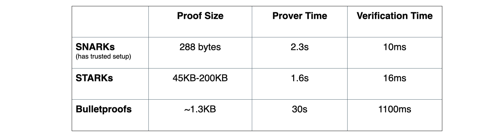
The FRI-PCS Context
The performance of a STARK is ascribable to the context in which it is deployed, the FRI Polynomial Commitment Scheme (or FRI-PCS). The acronym FRI is short for Fast Reed-Solomon Interactive Oracle Proof of Proximity, also abbreviated as "Fast RS-IOPP".
On a high-level, FRI enables proving whether a given function \(f : {\mathcal{H}} \to \mathbb{F}_p\) is “close” to a certain polynomial of low degree. Hence the term proof of proximity.
Loosely put, the FRI protocol allows for a random set of queries (requests for openings of polynomials at randomly selected field elements), used by the verifier to ascertain with high probability, the prover's knowledge of a committed polynomial.
FRI is in fact a Merkle commitment scheme where commitments are roots of Merkle trees, and therefore needs no trusted setup, as it only uses hash functions.
The FRI protocol is considered fast for several reasons;
- Firstly, due to its resemblance of the ubiquitous Fast Fourier Transforms (FFTs).
- Secondly, the arithmetic complexity of the prover is strictly linear.
- Thirdly, the size of the proof is O(n log(n)).
- And fourthly, the arithmetic complexity of the verifier is strictly logarithmic.
Our special implementation of a STARK is called PIL-STARK, and its polynomial commitment scheme (PCS) is also based on the FRI protocol. We will later demonstrate how PIL-STARK is used to prove the polynomial identities of the mFibonacci state machine.
Before describing PIL-STARK a quick look at the novel Polynomial Identities Language (PIL), and some of its distinguishing features, will be helpful.
What Is PIL?
PIL is a domain-specific language (DSL) that provides a method for naming polynomials and describing the identities that define computations carried out by a state machine.
A typical \(\texttt{.pil}\) file for a given state machine specifies the details of the computation that the state machine carries out;
- the size (or degree) of the polynomials. i.e., the number of rows of the execution trace.
- the namespace of the state machine, which becomes a prefix to names of the SM's polynomials.
- defines the \(\texttt{ISLAST}\) polynomial as a constant (preprocessed) polynomial.
- defines committed polynomials; \(\texttt{a}\) and \(\texttt{b}\).
- the zero-checks of the transition constraints.
- and, a zero-check of the boundary constraint.
In cases where several state machines are being proved; although each SM may have a polynomial named "ISLAST", there would be no name-clashes in the Prover (and in the Verifier) because each polynomial is identified by prefixing its name with the namespace of the SM it belongs to. For example, \(\texttt{mFibonacci.ISLAST}\) is the identifier of ISLAST where the mFibonacci SM has the namespace \(\texttt{mFibonacci}\).
See Figure 7 below, for a description of the mFibonacci SM in PIL, as an \(\texttt{mFibonacci.pil}\) file.
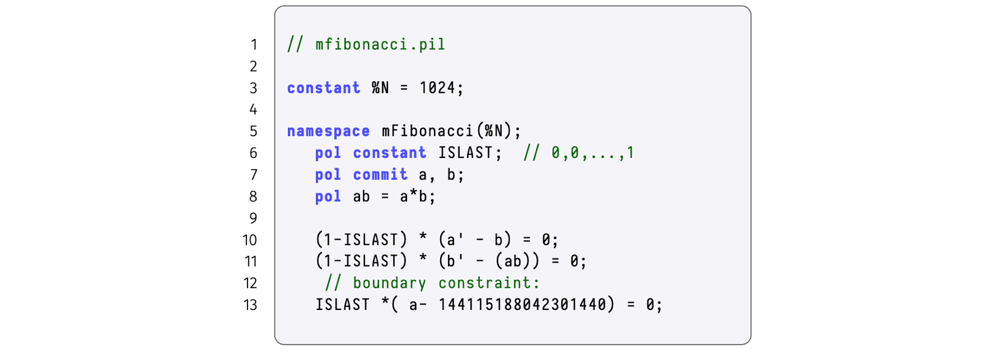
The value of the polynomial \(\mathtt{a}\) in the next step (or state) of the state machine, is denoted by \(\mathtt{a'}\) and it is read "a"-prime. i.e., If \(\mathtt{a = P(\omega^i)}\) then \(\mathtt{a' = P(\omega^{i+1})}\).
Note that the current version of the PIL language only accepts degree-two expressions. That is, a single multiplication such as \(\texttt{(a-1)*a}\) and \(\texttt{a*b}\), but not \(\texttt{(a-1)*b*c}\).
The extra line, \(\text{line 8}\) in Figure 7, was added for the very reason, to prevent the double multiplication required in the zero-check $$ \mathtt{(1-ISLAST) * (b' - (a*b)) = 0;} $$ by splitting it into two steps, \(\text{line 8}\) and \(\text{line 11}\).
A fuller description of PIL has been documented here.
Compiling PIL Into JSON (Demo)
Due to the modular design of the zkProver, it is possible to take a \(\texttt{.pil}\) file describing computations of any state machine and compile it into a parsed version, a \(\texttt{.json}\) file, that can be interpreted by the other software components.
We demonstrate compiling the \(\texttt{mFibonacci.pil}\) file into a \(\texttt{.json}\) file with a novel Polynomial Identities Language Compiler, dubbed \(\texttt{PILCOM}\). The details of \(\texttt{PILCOM}\) will be documented elsewhere, but its repo can be found here. We treat it as a 'blackbox' in this demonstration.
Here's how to achieve the compilation of the \(\texttt{mFibonacci.pil}\) file;
-
Clone the \(\texttt{PILCOM}\) repo, $$ \texttt{git clone https://github.com/0xPolygonHermez/pilcom} $$
-
Once cloned, switch directory to \(\texttt{pilcom/}\), and install the module, $$ \mathtt{pilcom$} \texttt{ npm install}\quad\text{} \ $$ and build the parser,
$$ \mathtt{pilcom$} \texttt{ npm run build}\text{}\ $$ -
Type the lines of code, the \(\texttt{mFibonacci.pil}\), into your code editor as it appears in Figure 7 above. You will need to Save it in some temporary folder. Whatever filename you give to the file, remember to use the "\(\texttt{.pil}\)" extension. In our case, we saved it in a folder named \(\texttt{myproject}\), and named the file \(\texttt{mFibonacci.pil}\)
-
Compile the \(\texttt{mFibonacci.pil}\) either at the \(\texttt{pilcom}\) directory or the \(\texttt{pilcom/src}\) subdirectory, using the command, $$ \mathtt{pilcom$} \texttt{ node src/pil.js myproject/mfibonacci.pil -o myproject/mfibonacci.pil.json }\qquad\qquad\qquad\qquad\text{ }\ $$ or $$ \mathtt{pilcom/src$ } \texttt{ node pil.js myproject/mfibonacci.pil -o myproject/mfibonacci.pil.json}\ \text{ } $$ You might need to prefix the path "\(\texttt{myproject/mfibonacci.pil}\)" with "~/"
-
If successful, the output report (printed in the terminal) looks like this, 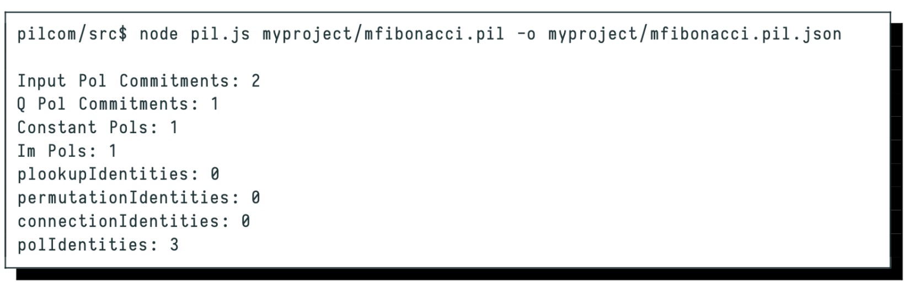
It provides information on the number of polynomials used (both constant and committed), the number of polynomial identities to be checked, and other information pertaining to the number of identities checked with; \(\texttt{Plookup}\) tables, \(\texttt{Permutation}\) checks and \(\texttt{Connection}\) checks.
- The \(\texttt{.json}\) file that \(\texttt{PILCOM}\) produces has the name speciified in Step 4, and can be found in the folder (subdirectory) specified in Step 4.
In our case, the \(\texttt{.json}\) file produced by \(\texttt{PILCOM}\) appears in the "MYPROJECT" folder as \(\texttt{\{ \} fibonacci.pil.json}\) and its content looks like this (Well, after removing the many newlines),
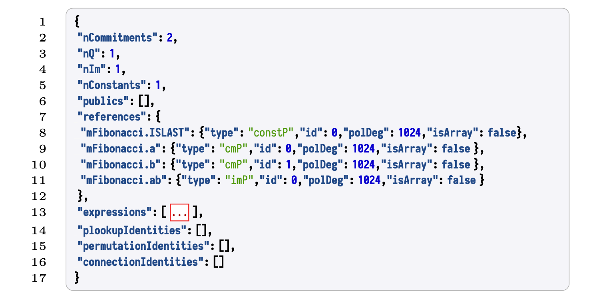
The \(\texttt{\{ \} fibonacci.pil.json}\) file contains much more detail than the results seen in Step 5 above. For instance, it reflects the polynomial names prefixed with the state machine namespace \(\texttt{mFibonacci}\) as stipulated to in the \(\texttt{mFibonacci.pil}\) file.
Each polynomial is further described with four (4) attributes;
(a) \(\texttt{type}\) which specifies whether the polynomial is committed, constant or intermediate.
(b) \(\texttt{id}\) is a unique identity associated to with the polynomial
(c) \(\texttt{polDeg}\) reflects the degree of the polynomial
(d) \(\texttt{isArray}\) is a flag used to control array-based polynomial definitions.
Among all the contents of the \(\texttt{\{ \} fibonacci.pil.json}\) file, there is a key called \(\texttt{expressions}\) which is an array containing all the identities and operations among the corresponding polynomials.
Moreover, the \(\texttt{\{ \} fibonacci.pil.json}\) file contains other keys representing all inclusion, permutation and copy constraint arguments.
Other fields, important for debugging purposes, are (a) \(\texttt{nCommitments}\): which specifies the total number of committed polynomials. (b) \(\texttt{Constants}\): which specifies the total number of constant polynomials referenced in the PIL file.
Description Of PIL-STARK
Simply put, PIL-STARK is a special STARK that enables; the state machine Prover (SM-Prover) to generate a STARK proofs for a State Machine written in PIL, and the state machine Verifier (SM-Verifier) to verify the STARK-proofs provided by the Prover. Hence there is a PIL-STARK component in the SM-Prover which is the Generator of a STARK proof, and another PIL-STARK component in the SM-Verifier which is the actual Verifier of the STARK proof.
Since the SM-Prover and the SM-Verifier, who are separate and independent entities, require certain PIL-STARK parameters prior to proving and verification, the system needs some preprocessing phase. Call this phase, the "Setup" Phase.
The PIL-STARK proof/verification process therefore consists of three (3) phases; the Setup, the Proving and the Verification. These are outlined below.
PIL-STARK Preprocessing ("Setup") Phase
The Setup Phase can be thought of as consisting of three 'components'; the \(\texttt{PILCOM}\), the Setup \(\texttt{Executor}\) and the \(\texttt{PIL-STARK Setup}\).
Compilation With PILCOM
The novel compiler, called \(\texttt{PILCOM}\), which is used for compiling a \(\texttt{.pil}\) file into a parsed \(\texttt{.json}\) file, is part of the Setup Phase of PIL-STARK. The compilation of the \(\texttt{.pil}\) file into a parsed \(\texttt{.json}\) file therefore happens in this phase of the PIL-STARK proof/verification process.
The Setup Executor
The \(\texttt{Setup Executor}\) takes as input the PIL \(\texttt{.json}\) file from \(\texttt{PILCOM}\) in order to compute the evaluations of the state machine's constant polynomials. For each state machine, described by the \(\texttt{.pil}\) file compiled with \(\texttt{PILCOM}\), the execution process is carried out only once.
PIL-STARK Setup
The PIL-STARK Setup takes as inputs; the PIL \(\texttt{.json}\) file from \(\texttt{PILCOM}\), the evaluations of the constant polynomials from the \(\texttt{Setup}\) \(\texttt{Executor}\), and the STARK configuration information in the form of a \(\texttt{starkstruct.json}\) file. It then creates a Merkle tree with the evaluations of all the constant polynomials, called the \(\texttt{constTree}\)
It outputs PIL-STARK parameters; the \(\texttt{constTree}\) which is a Merkle Tree of evaluations of the constant polynomials, the \(\texttt{starkInfo}\) which is a STARK-specific information, and the \(\texttt{constRoot}\) which is the root of the \(\texttt{constTree}\).
Overall, the Setup Phase of PIL-STARK takes as inputs; the \(\texttt{.pil}\) file describing the state machine and STARK-specific parameters. Its outputs are; the evaluations of the constant polynomials, the \(\texttt{constTree}\), the \(\texttt{starkInfo}\), the \(\texttt{constRoot}\), as well as the PIL \(\texttt{.json}\) file from \(\texttt{PILCOM}\).
We emphasise that the Setup Phase of PIL-STARK is run only once for a particular \(\texttt{.pil}\) file describing the state machine. A change in the \(\texttt{.pil}\) file means a fresh Setup needs to be executed.
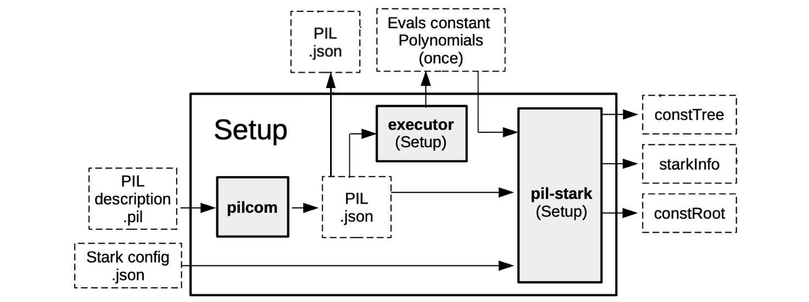
PIL-STARK Proving Phase
The Proving Phase consists of two main components; the \(\texttt{SM-Prover}\) \(\texttt{Executor}\) and the PIL-STARK proof \(\texttt{Generator}\).
The SM-Prover's Executor
The executor in the SM-Prover's takes as inputs; the PIL \(\texttt{.json}\) file from \(\texttt{PILCOM}\) and another \(\texttt{.json}\) file of inputs, called \(\texttt{input.json}\) . In the case of our mFibonacci SM, the inputs in \(\texttt{input.json}\) includes the initial values of the registries \(\texttt{A}\) and \(\texttt{B}\).
The SM-Prover's Executor builds the values of polynomials that are to be committed. Its output is the evaluations of the committed polynomials, per proof. These evaluations of committed polynomials are actually the SM's execution trace.
Note that the input values in the \(\texttt{input.json}\) file can be varied without altering the actual state machine. The reason the state machine remains intact is due to fact that the \(\texttt{.pil}\) file, that was initially compiled in the Setup phase, is not affected by any change in the input values of the SM-Prover's Executor.
However, with every set of inputs, the SM-Prover's Executor computes corresponding evaluations of the committed polynomials to be used in generating the respective STARK proof. In other words, each new set of inputs determines a new set of evaluations, which in turn determines the STARK proof generated by the PIL-STARK Generator.
PIL-STARK proof Generator
This STARK Proof Generator takes as inputs; the the evaluations of the of committed polynomials from the SM-Prover's Executor, the evaluations of the constant polynomials from the Setup Phase, together with the \(\texttt{constTree}\) and the \(\texttt{starkInfo}\).
This is where the evaluations of the committed polynomials, from the SM-Prover's Executor, are Merkelized. And all elements of the ultimate STARK proof are generated, these include; the witness and the required openings of the committed polynomials.
The output of the STARK Proof Generator is a \(\texttt{STARK}\) \(\texttt{proof}\) and the \(\texttt{publics}\), which are values to be publicised.
For the PIL-STARK Proving Phase as a whole, also as depicted in Figure 9 below,
- there are five (5) inputs; the \(\texttt{input.json}\) file, the PIL \(\texttt{.json}\) file from \(\texttt{PILCOM}\), the evaluations of the constant polynomials from the Setup Phase, as well as the \(\texttt{constTree}\) and the \(\texttt{starkInfo}\).
- and there are two (2) outputs; a \(\texttt{STARK}\) \(\texttt{proof}\) and the \(\texttt{publics}\).
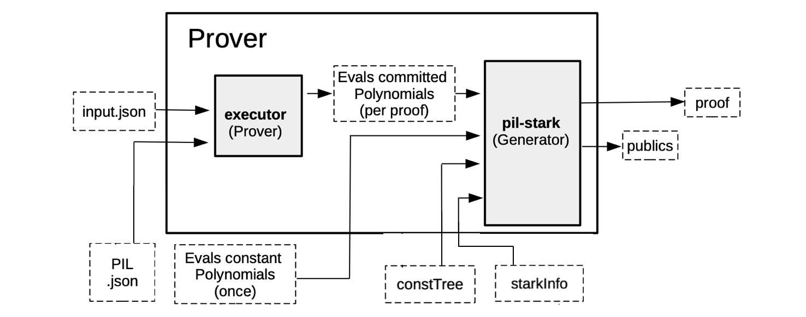
PIL-STARK Verification Phase
The Verification Phase is constituted by the PIL-STARK Verifier.
As it is common practice amongst zero-knowledge proof/verification systems, the size of the Verifier's inputs is very small compared to that of the Prover's inputs. For example, while the Proving Phase takes the whole \(\texttt{constTree}\) as one of its inputs, the Verifier takes the \(\texttt{constRoot}\) instead.
The inputs to the Verifier are; the \(\texttt{STARK}\) \(\texttt{proof}\) and the \(\texttt{publics}\) from the Prover, together with the \(\texttt{starkInfo}\) and the \(\texttt{constRoot}\) from the Setup Phase.
And the Verifier's output is either an \(\texttt{Accept}\) if the proof is accepted, or a \(\texttt{Reject}\) if the proof is rejected.
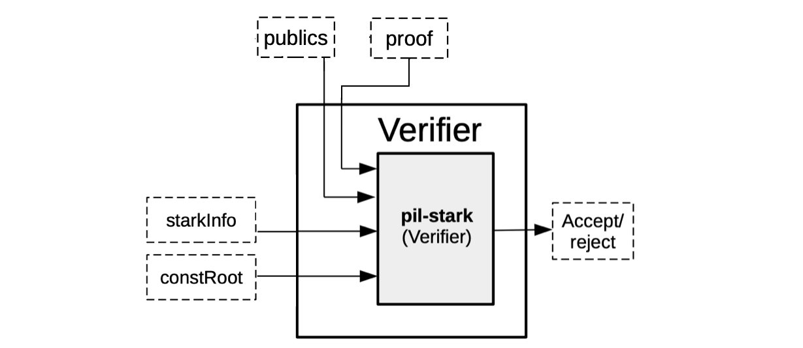
PIL-STARK is, all-in-all, a specific implementation of a STARK that can be used as a generic tool for proving state machines' polynomial identities.
The actual implementation of PIL-STARK uses recursion. That is, hundreds of STARK proofs are proved with another STARK proof, and these STARK proofs of other STARK proofs are also proved with a single STARK proof. This achieves exponential scalability than it would otherwise be possible.
The code for implementing PIL-STARK is found in the zkEVM repository here.
Re-writing Boundary Constraints For Publics
As seen in the description of PIL-STARK, one of the outputs of the SM-Prover is the \(\texttt{publics}\), which are publicly known values. However, looking back at our demonstration, where the \(\texttt{mFibonacci.pil}\) file was compiled with \(\texttt{PILCOM}\), you will notice that the \(\texttt{publics}\) field in the parsed \(\texttt{\{ \} fibonacci.pil.json}\) file is empty. Check \(\text{line 6}\) in the provided snapshot of the "\(\texttt{\{ \} fibonacci.pil.json}\)" file, and notice it reads thus: $$ \texttt{"publics": [],} $$ This is so, because no \(\texttt{publics}\) were defined in the \(\texttt{mFibonacci.pil}\) file that we compiled. This can also be checked in Figure 7 above.
Again, you'll notice that the 1024-th value of the polynomial \(\texttt{a}\) was hardcoded as \(\mathtt{144115188042301440}\) in \(\texttt{line}\) \(\texttt{13}\), which checks the boundary constraint: $$ \mathtt{ISLAST*(a - 144115188042301440) = 0;} $$ This is undesirable because any change in the initial conditions would yield a wrong proof, which the Verifier would reject.
The aim in this subsection is to therefore, rewrite the boundary constraint in the \(\texttt{mFibonacci.pil}\) file such that, instead of hardcoding this public value, it is rather generically defined. So, \(\mathtt{144115188042301440}\), is replaced with a public variable called "\(\texttt{out}\)". The new variable must be declared, and it is defined as, $$ \textbf{public} \texttt{ out = a(\%N - 1);} $$ The modified boundary constraint check in \(\texttt{mFibonacci.pil}\) now looks like this, $$ \texttt{ISLAST*(a - :out) = 0;} $$ where the ":" colon-prefix indicates a read of the value stored at \(\texttt{out}\).
The modified \(\texttt{mFibonacci.pil}\) file, before compilation with \(\texttt{PILCOM}\), is now as follows,
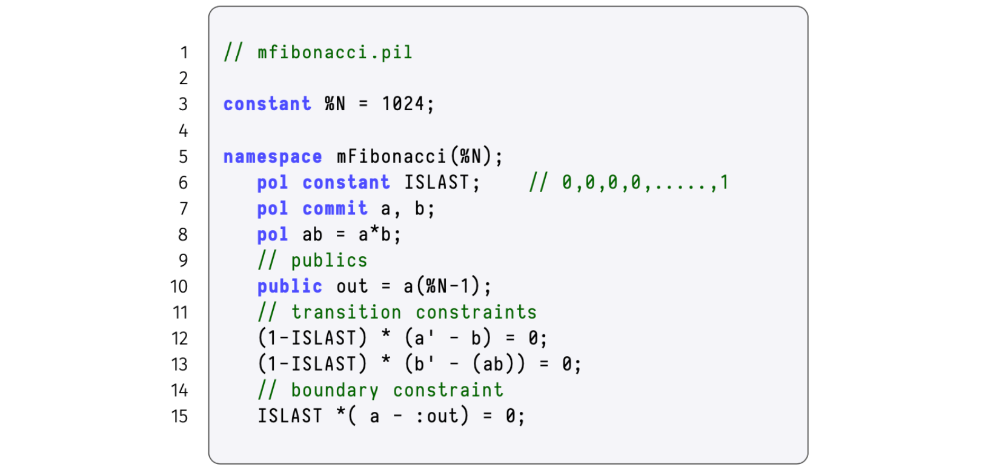
This modified \(\texttt{mFibonacci.pil}\) file can be compiled with \(\texttt{PILCOM}\) in the manner demonstrated earlier. The resulting parsed PIL file, "\(\texttt{\{ \} mfibonacci.pil.json}\)", now reflects some information in the "\(\texttt{publics}\)" field, as shown here:
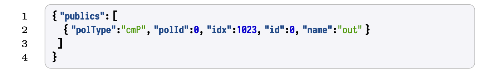
PIL-STARK Implementation (Demo)
Next, is a demonstration of how PIL-STARK is implemented. Again, you are encouraged to Do-It-Yourself, by following the steps provided in here.
Initialise A Node Project
The first step is to make a new subdirectory named \(\mathtt{mfibonacci\_sm}\), switch directory to it and initialise a node project as indicated below, $$ \texttt{ npm init -y } $$ A successful initialisation looks like this:
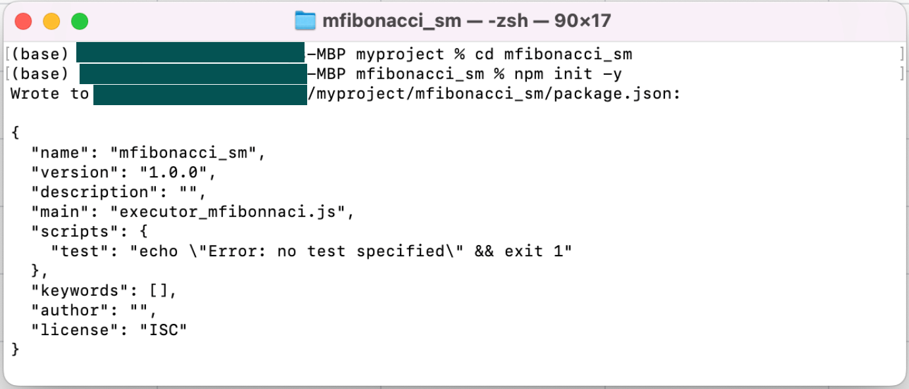
Next, install the required dependencies with the following command, $$ \texttt{ npm install pil-stark yargs chai } $$ The installation takes seconds, and again the results looks like this,
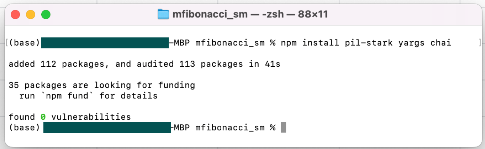
Create Input Files
First of all, the overall inputs to PIL-STARK are; the \(\texttt{.pil}\) file describing the mFibonacci state machine, the STARK configuration \(\texttt{.json}\) file and the inputs \(\texttt{.json}\) file, which contains initial values of the mFibonacci state machine.
- Either move the modified version of the \(\texttt{mfibonacci.pil}\) file to the \(\mathtt{mfibonacci\_sm}\) subdirectory, or create a new file afresh at this subdirectory. Call it \(\texttt{mfibonacci.pil}\). That is, copy the text below to the new file. Save the file.
// mfibonacci.pil
constant %N = 1024;
namespace mFibonacci(%N);
pol constant ISLAST; // 0,0,0,0,.....,1
pol commit a, b;
pol ab = a*b;
// publics
public out = a(%N-1);
// transition constraints
(1-ISLAST) * (a' - b) = 0;
(1-ISLAST) * (b' - (ab)) = 0;
// boundary constraint
ISLAST*(a-:out)=0;
- Next, create a new file and call it \(\texttt{mfib.starkstruct.json}\). Copy the code-text shown below, into this JSON file, and save it.
// text{mfib.starkstruct.json}
{
"nBits": 10,
"nBitsExt": 11,
"nQueries": 8,
"verificationHashType": "GL",
"steps": [
{"nBits": 11},
{"nBits": 7},
{"nBits": 3}
]
}
- Create a new file and call it \(\texttt{mfib.input.json}\). Populate this JSON file with the initial values of the mFibonacci state machine of your choice (the numbers must be positive integers). We use here \(\texttt{[ 234, 135 ]}\). Simply type the 2-element array in the \(\texttt{mfib.input.json}\) file and save it.
Create The \(\texttt{Executor}\)
In our earlier description of PIL-STARK, the \(\texttt{Executor}\) was 'split' into the \(\texttt{Setup} \texttt{ executor}\) and the \(\texttt{Prover } \texttt{executor}\). This was done for simplicity's sake. The two \(\texttt{executors}\) are but one program that generates the evaluations of the constant polynomial, as well as the evaluations of the committed polynomials.
Create a new file and call it \(\mathtt{executor\_mfibonacci.js}\). Copy the code-text shown below, into this \(\texttt{.js}\) file and save it in the \(\mathtt{mfibonacci\_sm}\) subdirectory.
// executor_mfibonacci.js
const { FGL } = require("pil-stark");
module.exports.buildConstants = async function (pols) {
const N = 1024;
for ( let i=0; i<N; i++) {
pols.ISLAST[i] = (i == N-1) ? 1n : 0n;}
}
module.exports.execute = async function (pols, input) {
const N = 1024;
pols.a[0] = BigInt(input[0]);
pols.b[0] = BigInt(input[1]);
for(let i=1; i<N; i++){
pols.a[i] = pols.b[i-1];
pols.b[i] = FGL.mul(pols.a[i-1], pols.b[i-1]);
}
return pols.a[N-1];
}
Create PIL-STARK Proof Generator And Verifier
Finally, create the PIL-STARK proof generator and verifier by creating a new file (using a code editor) and name it \(\mathtt{mfib\_gen\_and\_prove.js}\).
Copy the code-text shown below, into this \(\mathtt{mfib\_gen\_and\_prove.js}\) file and save it in the \(\mathtt{mfibonacci\_sm}\) subdirectory.
const { FGL, starkSetup, starkGen, starkVerify } = require("pil-stark");
const { newConstantPolsArray, newCommitPolsArray, compile, verifyPil } = require("pilcom");
const path = require("path");
// Files
const pilFile = path.join(__dirname, "mfibonacci.pil");
const input = require("./mfib.input.json");
const mFibExecutor = require("./executor_mfibonacci");
const starkStruct = require("./mfib.starkstruct.json");
async function generateAndVerifyPilStark() {
// Generate constants (preprocessed)
const pil = await compile(FGL, pilFile);
const constPols = newConstantPolsArray(pil);
const cmPols = newCommitPolsArray(pil);
await mFibExecutor.buildConstants(constPols.mFibonacci);
const executionResult = await mFibExecutor.execute(cmPols.mFibonacci, input);
console.log(executionResult);
// Generate trace
const evaluationPilResult = await verifyPil(FGL, pil, cmPols , constPols);
if (evaluationPilResult.length != 0) {
console.log("Abort: the execution trace generated does not satisfy the PIL description!");
for (let i=0; i < evaluationPilResult.length; i++) {
console.log(pilVerificationResult[i]); } return;
} else {
console.log("Continue: execution trace matches the PIL!"); }
// Setup for the stark
const setup = await starkSetup(constPols, pil, starkStruct);
// Generate the stark
const proverResult = await starkGen(cmPols,constPols,setup.constTree,setup.starkInfo);
// Verify the stark
const verifierResult= await starkVerify(proverResult.proof, proverResult.publics, setup.constRoot,setup.starkInfo);
if (verifierResult === true) { console.log("VALID proof!");
} else { console.log("INVALID proof!"); }
}
generateAndVerifyPilStark();
Run the \(\mathtt{mfib\_gen\_and\_prove.js}\) code: $$ \mathtt{node } \texttt{ mfib_gen_and_prove.js} $$ After a long reporting on all the checks made, a successful STARK generation and its verification is indicated with a "\(\texttt{VALID proof!}\)" message. If you used different filenames from ours, you might have to do some light debugging.